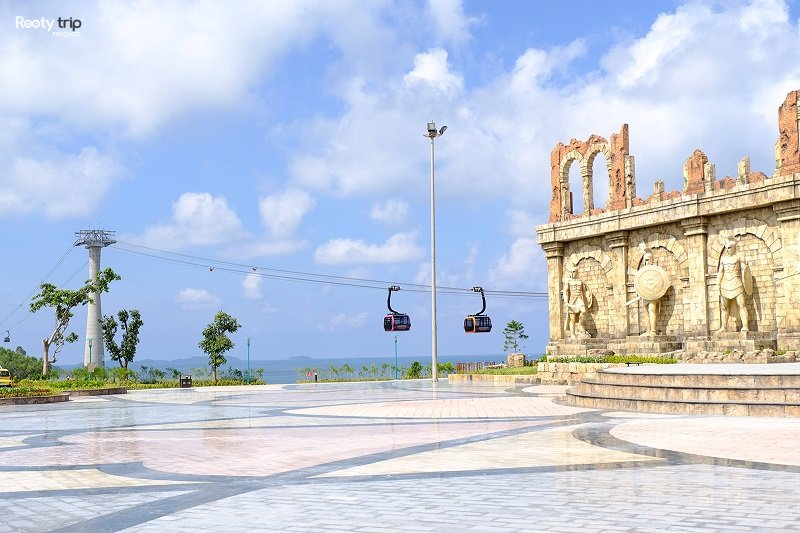

VĂN HIẾN TRAVEL
Cùng bạn khám phá những hành trình tuyệt vời
Kinh nghiệm đi cáp treo Hòn Thơm
Cáp treo Hòn Thơm là tuyến cáp treo 3 dây vượt biển dài nhất thế giới, được Guinness công nhận năm 2018 với chiều dài 7.899,9 mét. Tuyến cáp nối từ Ga Ánh Dương đến đảo Hòn Thơm, đi qua Hòn Dừa và Hòn Rỏi. Trụ cao nhất đạt 174m, mỗi cabin chứa 30 người, thời gian di chuyển khoảng 15 phút.
Trải nghiệm thực tế trên cabin

Cabin rộng rãi, kính trong suốt 360 độ. Khi cabin rời ga, cảm giác nâng lên nhẹ nhàng, không giật, không chao đảo nhờ công nghệ 3 dây của Doppelmayr (Áo).
Khoảnh khắc đáng nhớ nhất là khi cabin lướt qua Hòn Dừa, nhìn xuống thấy làng chài với hàng trăm tàu đánh cá đậu san sát. Đoạn qua trụ cao 174m cho cảm giác lơ lửng giữa biển trời, nhìn thấy quần đảo An Thới với 18 hòn đảo lớn nhỏ.
Về chóng mặt: hầu hết khách kể cả người lớn tuổi đều thấy ổn vì cabin di chuyển êm. Chỉ có cảm giác xóc nhẹ 1-2 giây khi cabin qua mỗi trụ (khoảng 1km/trụ). Người sợ độ cao nên ngồi giữa cabin, nhìn ra xa thay vì nhìn xuống.
Khung cảnh nhìn từ cabin

Từ trên cao có thể thấy toàn cảnh Nam đảo Phú Quốc, thị trấn Hoàng Hôn với kiến trúc Địa Trung Hải, Cầu Hôn, quần đảo An Thới với màu nước xanh ngọc bích, làng chài Hòn Dừa và những chiếc cano lướt sóng bên dưới.
Lưu ý quan trọng
Thời điểm đi đẹp nhất: 8:00–9:30 sáng (ánh sáng vàng, ít người) hoặc 16:30–17:30 chiều (hoàng hôn). Tránh 11:00–14:00 vì nắng gắt và đông khách.
Chỗ ngồi: Đi sang Hòn Thơm nên đứng bên cửa sổ trái (hướng tây) để thấy thị trấn Hoàng Hôn và Cầu Hôn. Chiều về đứng bên cửa sổ phải.
Wifi và sóng điện thoại: Cabin không có wifi, sóng điện thoại chập chờn ở đoạn giữa biển. Đây là dịp buông điện thoại và ngắm cảnh.
Chụp ảnh: Không bật flash vì sẽ phản chiếu vào kính cabin. Nên chụp sát kính, tắt flash, dùng chế độ HDR.
Đồ mang theo: Áo khoác mỏng vì cabin điều hòa lạnh, đặc biệt với trẻ em. Mang chai nước 500ml vì giá nước trong khu Sun World khá đắt (30.000–50.000 VNĐ/chai). Không mang đồ ăn, đồ uống có ga, đồ vật cồng kềnh.
Toilet: Cabin không có toilet, cần đi vệ sinh trước khi lên cáp tại Ga Ánh Dương (miễn phí, sạch sẽ).
Sau khi xuống cabin – Sun World Hon Thom
Ga Hòn Thơm dẫn vào Sun World Hon Thom Nature Park với 4 khu chính:
Aquatopia Water Park: Hơn 20 trò chơi nước, nổi bật là Boomerango (đường trượt hình lưỡi liềm), Mammoth Slide (trượt phao 6 người), sông lười. Nên chơi buổi sáng 9h–11h để tránh nắng và đông.
Exotica Theme Park: Có Mộc Xà Thịnh Nộ – tàu lượn siêu tốc bằng gỗ đầu tiên tại Việt Nam, Mắt Đại Bàng – tháp quan sát xoay cao 120m, Nọc Độc Mãng Xà.
Bãi Trào: Bãi biển hoang sơ với cát trắng mịn, nước trong, có dịch vụ tắm tráng và cho thuê ghế.
Buffet Mango: Hơn 70 món từ hải sản đến món Việt, quốc tế, mở 11:00–14:30. Mua combo cáp treo + buffet rẻ hơn mua riêng khoảng 200.000–300.000 VNĐ.
Lịch trình 1 ngày tham khảo
08:00–08:30 check-in thị trấn Hoàng Hôn; 08:30–09:00 đến Ga Ánh Dương, quét vé, vệ sinh; 09:00–09:15 đi cáp treo; 09:15–11:00 chơi Aquatopia; 11:00–12:00 chơi Exotica (Mộc Xà Thịnh Nộ, Mắt Đại Bàng); 12:00–13:30 buffet Mango; 13:30–15:00 tắm biển Bãi Trào hoặc chơi tiếp Aquatopia; 15:00–15:30 mua đồ lưu niệm; 15:30–15:45 cáp treo về; 16:00–18:00 ngắm Cầu Hôn, chụp ảnh hoàng hôn; 18:30–20:00 ăn tối VUIFest Bazaar hoặc xem show Kiss of the Sea.
Người sợ độ cao có nên đi?
Nếu chỉ sợ nhẹ, đã từng đi máy bay hoặc thang máy kính mà không hoảng loạn thì nên thử vì cabin rất êm và ổn định. Nếu có chứng sợ độ cao nghiêm trọng đã được chẩn đoán, tim mạch yếu, huyết áp không ổn định thì không nên đi, có thể chọn cano ra đảo (khoảng 30 phút).
Mẹo vượt nỗi sợ: đi cùng người thân, ngồi giữa cabin, quay lưng về hướng di chuyển, đeo tai nghe nhạc, nhắm mắt 30 giây đầu.
Trẻ em và người lớn tuổi
Trẻ từ 3 tuổi trở lên đi được, trẻ dưới 1m miễn phí vé nhưng phải có người lớn đi cùng. Nên mang đồ ăn vặt nhẹ, áo khoác mỏng, đi vệ sinh trước khi lên cabin.
Người 60–80 tuổi hoàn toàn phù hợp nếu không có vấn đề tim mạch nghiêm trọng. Nên mang gậy chống nắng, thuốc cá nhân, có thể thuê xe điện trong Sun World (50.000 VNĐ/lượt) để đỡ mỏi.
So sánh cáp treo và cano
Cáp treo mất 15 phút, view biển từ trên cao, phù hợp gia đình và người lớn tuổi, chỉ đến Hòn Thơm. Cano mất 30–45 phút, cảm giác lướt sóng mạnh hơn, phù hợp người trẻ thích cảm giác mạnh, đi được 3 đảo và có snorkel san hô, nhưng có thể say sóng. Nếu có 2 ngày tại Phú Quốc, nên làm cả hai.
Đi vào ngày mưa
Khi có giông sét, mưa to, cáp treo tạm ngừng vì lý do an toàn. Mưa nhẹ vẫn chạy bình thường, tầm nhìn vẫn ổn. Nếu cáp dừng giữa chừng, Sun World có chính sách hoàn vé hoặc đổi ngày miễn phí. Mùa mưa Phú Quốc (tháng 5–10) mưa thường đến 15:00–17:00, nên đi cáp buổi sáng.
Câu hỏi thường gặp
Cáp treo dài bao nhiêu? 7.899,9 mét, dài nhất thế giới theo Guinness từ 2018.
Đi mất bao lâu? Khoảng 15 phút một chiều.
Có chóng mặt không? Hầu hết thấy bình thường, chỉ xóc nhẹ khi qua trụ.
Trẻ mấy tuổi đi được? Từ 3 tuổi trở lên.
Cabin chứa bao nhiêu người? Tối đa 30 người, thường xếp 15–20 người.
Trụ cao nhất bao nhiêu mét? 174m so với mặt biển.
Có nên mua vé online? Có, đặt online thường tiết kiệm 10–15% so với mua tại quầy.
Mùa nào đẹp nhất? Tháng 11 đến tháng 4 (mùa khô), trời nắng, biển êm, view rõ.
Kết luận
Cáp treo Hòn Thơm là trải nghiệm đáng thử khi đến Phú Quốc lần đầu: 15 phút bay trên biển, ngắm 18 hòn đảo An Thới, vượt trụ cao 174m. Kết hợp với Aquatopia, Exotica, Bãi Trào và buffet Mango sẽ có một ngày trọn vẹn. Nên đi buổi sáng, mặc trang phục phù hợp, mang đủ đồ và đặt vé online trước để tiết kiệm thời gian.